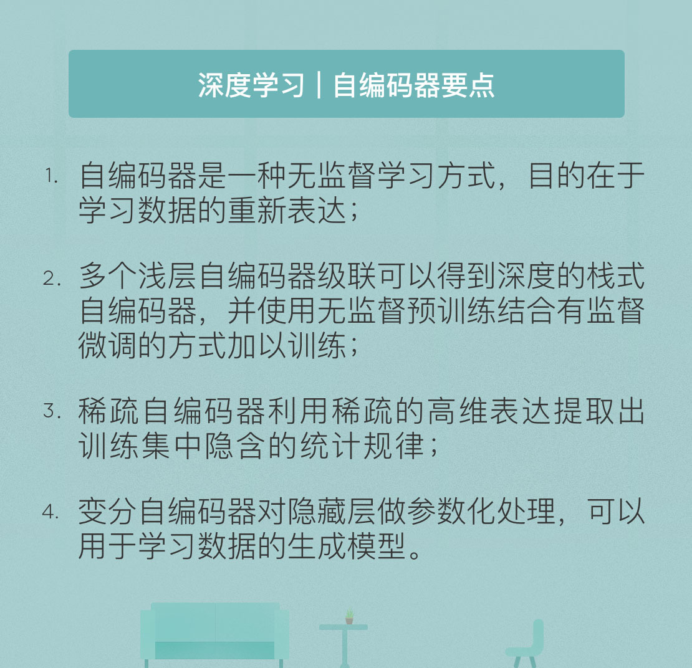

- 00 开篇词 人工智能：新时代的必修课.md.html
- 01 数学基础 九层之台，起于累土：线性代数.md.html
- 02 数学基础 月有阴晴圆缺，此事古难全：概率论.md.html
- 03 数学基础 窥一斑而知全豹：数理统计.md.html
- 04 数学基础 不畏浮云遮望眼：最优化方法.md.html
- 05 数学基础 万物皆数，信息亦然：信息论.md.html
- 06 数学基础 明日黄花迹难寻：形式逻辑.md.html
- 07 机器学习 数山有路，学海无涯：机器学习概论.md.html
- 08 机器学习 简约而不简单：线性回归.md.html
- 09 机器学习 大道至简：朴素贝叶斯方法.md.html
- 10 机器学习 衍化至繁：逻辑回归.md.html
- 11 机器学习 步步为营，有章可循：决策树.md.html
- 12 机器学习 穷则变，变则通：支持向量机.md.html
- 13 机器学习 三个臭皮匠，赛过诸葛亮：集成学习.md.html
- 14 机器学习 物以类聚，人以群分：聚类分析.md.html
- 15 机器学习 好钢用在刀刃上：降维学习.md.html
- 16 人工神经网络 道法自然，久藏玄冥：神经网络的生理学背景.md.html
- 17 人工神经网络 一个青年才俊的意外死亡：神经元与感知器.md.html
- 18 人工神经网络 左手信号，右手误差：多层感知器.md.html
- 19 人工神经网络 各人自扫门前雪：径向基函数神经网络.md.html
- 20 人工神经网络 看不见的手：自组织特征映射.md.html
- 21 人工神经网络 水无至清，人莫至察：模糊神经网络.md.html
- 22 深度学习 空山鸣响，静水流深：深度学习概述.md.html
- 23 深度学习 前方有路，未来可期：深度前馈网络.md.html
- 24 深度学习 小树不修不直溜：深度学习中的正则化.md.html
- 25 深度学习 玉不琢不成器：深度学习中的优化.md.html
- 26 深度学习 空竹里的秘密：自编码器.md.html
- 27 深度学习 困知勉行者勇：深度强化学习.md.html
- 28 深度学习框架下的神经网络 枯木逢春：深度信念网络.md.html
- 29 深度学习框架下的神经网络 见微知著：卷积神经网络.md.html
- 30 深度学习框架下的神经网络 昨日重现：循环神经网络.md.html
- 31 深度学习框架下的神经网络 左右互搏：生成式对抗网络.md.html
- 32 深度学习框架下的神经网络 三重门：长短期记忆网络.md.html
- 33 深度学习之外的人工智能 一图胜千言：概率图模型.md.html
- 34 深度学习之外的人工智能 乌合之众的逆袭：集群智能.md.html
- 35 深度学习之外的人工智能 授人以鱼不如授人以渔：迁移学习.md.html
- 36 深度学习之外的人工智能 滴水藏海：知识图谱.md.html
- 37 应用场景 你是我的眼：计算机视觉.md.html
- 38 应用场景 嘿, Siri：语音处理.md.html
- 39 应用场景 心有灵犀一点通：对话系统.md.html
- 40 应用场景 数字巴别塔：机器翻译.md.html
- 一键到达 人工神经网络复习课.md.html
- 一键到达 应用场景复习课.md.html
- 一键到达 数学基础复习课.md.html
- 一键到达 机器学习复习课.md.html
- 一键到达 深度学习之外的人工智能复习课.md.html
- 一键到达 深度学习复习课.md.html
- 一键到达 深度学习框架下的神经网络复习课.md.html
- 推荐阅读 我与人工智能的故事.md.html
- 新书 《裂变：秒懂人工智能的基础课》.md.html
- 直播回顾 机器学习必备的数学基础.md.html
- 第2季回归 这次我们来聊聊机器学习.md.html
- 结课 溯洄从之，道阻且长.md.html
- 课外谈 “人工智能基础课”之二三闲话.md.html
- （课外辅导）人工神经网络 拓展阅读参考书.md.html
- （课外辅导）数学基础 拓展阅读参考书.md.html
- （课外辅导）机器学习 拓展阅读参考书.md.html
- （课外辅导）深度学习 拓展阅读参考书.md.html
- 捐赠
26 深度学习 空竹里的秘密：自编码器
自编码器（auto-encoder）是一类执行无监督学习任务的神经网络结构，它的目的是学习一组数据的重新表达，也就是编码。
在结构上，自编码器是包含若干隐藏层的深度前馈神经网络，其独特之处是输入层和输出层的单元数目相等；在功能上，自编码器的目的不是根据输入来预测输出，而是重建网络的输入，正是这样的功能将自编码器和其他神经网络区分开来。由于自编码器的图形表示像极了杂技中使用的道具空竹，因而也得了个“空竹网络”的雅号。
自编码器结构由编码映射和解码映射两部分组成。如果将编码映射记作\(\\phi\)，解码映射记作\(\\psi\)，自编码器的作用就是将输入\(\\mathbf{X}\)改写为\((\\psi \\circ \\phi) (\\mathbf{X})\)，这相当于将输入从一个表象下转换到另一个表象下来表示，就像量子力学中粒子不同表象之间的变化一样。如果以均方误差作为网络训练中的损失函数，自编码器的目的就是找到使均方误差最小的编解码映射的组合，即
\[ \\phi, \\psi = \\arg \\min_{\\phi, \\psi} || \\mathbf{X} - (\\phi \\circ \\psi) (\\mathbf{X}) || ^ 2\]
在最简单的情形，也就是只有一个隐藏层的情形下，自编码器隐藏层的输出就是编码映射。当隐藏层的维度小于输入数据的维度时，这就是个欠完备（undercomplete）的自编码器。欠完备自编码器的作用相当于对输入信号做了主成分分析，隐藏层的\(k\)个线性神经元在均方误差准则下保留贡献最大的\(k\)个主成分，原始信号就被投影到由这\(k\)个主成分所展成的新空间上。在自编码器的另一端，输出层将隐藏层的输出转换为自编码器的整体输出，从而实现了解码映射的功能。
如果隐藏神经元的传递函数是非线性的，编码映射就能够捕捉到输入分布中更加复杂的特征，均方误差准则也可以写成对数似然函数\(-\\log p(\\mathbf{X} | \\phi (\\mathbf{X}))\)的形式。当误差\(p(\\mathbf{X} | \\phi (\\mathbf{X}))\)满足高斯分布时，均方误差和最大似然是等价的。
从信息论的角度看，编码映射可以看成是对输入信源\(\\mathbf{X}\)的有损压缩。有损压缩的特点决定了它不可能对所有输入都具有较小的信息量损失，因而学习的作用就是习得在训练数据集上更加精确的映射，并希望这样的映射在测试数据上同样表现良好，也就是使自编码器具有较好的泛化性能。
当自编码器的隐藏单元数目大于输入信号的维度，也就是编码映射的分量数目大于输入信号的分量数目时，这就是个过度完备（overcomplete）的自编码器。过度完备的自编码器面临的一个严重问题是如果没有额外约束的话，那么它可能只能够习得识别功能，得到的编码映射和解码映射都是恒等映射，这显然是白费功夫。
可出人意料的是，自编码器的这个缺点恰恰能被过度完备性克服。实际结果表明，当使用随机梯度下降训练时，过度完备的非线性自编码器能够生成有用的表示。这个结论是由将自编码器的输出作为其他分类算法的输入，并统计分类错误得到的。
对这种现象的解释是当结合早停使用时，随机梯度下降的效果类似于对参数的\(L ^ 2\)正则化。为了实现连续输入的完美重构，具有非线性隐藏单元的单隐藏层自编码器需要在隐藏层中使用较小的权重，而在输出层使用较大的权重。尤其是在处理二进制输入时，大的权重系数还有利于最小化重构误差。
但由于种种隐式或显式正则化规则的限制，大权重系数是难以实现的，因而自编码器只能对数据进行重新的编码。这意味着在新的表象下，数据的表示利用的是训练集中存在的统计规律，而不是使用恒等映射简单地复制粘贴。
虽然自编码器通常只包含单个隐藏层，但这并不是强制的选择。和其他前馈网络一样，自编码器也会受益于深度结构。通用近似定理保证了具有单隐藏层的自编码器能够以任意精度逼近任意的连续函数，但难以对这样的自编码器任意添加额外的约束条件。相比之下，深度自编码器既能降低某些函数的计算成本，也能降低训练数据的数量要求，还能得到更高的压缩效率。
在实际中，训练深度自编码器的普遍策略是先训练一些浅层自编码器，再利用这些浅层自编码器贪心地预训练深度结构，因而浅层自编码器可以看作深度自编码器的中间件。换句话说，当需要使用3个隐藏层的深度自编码器时，我们的做法是将3个单隐藏层的自编码器逐层堆叠，而不会去直接训练一个5层的深度架构。用浅层自编码器搭建成的深度自编码器被称为栈式自编码器（stacked autoencoder）。
栈式自编码器的训练策略可以归结为两个步骤：无监督预训练+有监督微调。无监督预训练就是每个浅层自编码器的工作方式。原始数据输入\(\\mathbf{X}\)被用于训练网络的第一层，得到参数后，网络第一层就可以将原始输入转化成为由隐藏单元激活值组成的向量\(\\mathbf{X} ^ 1\)；接下来把\(\\mathbf{X} ^ 1\)作为第二层的输入，继续训练得到第二层的参数后又可以计算出第二层的输出\(\\mathbf{X} ^ 2\)。对后面的各层也采取策略，即将前层的输出作为后层输入的方式依次训练。
在以上的训练方式中，训练每一层的参数时都会保持其他各层的参数固定不变。如果要得到全局意义上更优的结果，需要在上述预训练过程完成之后，利用反向传播算法同时调整所有层的参数以改善全局性能，这个过程就是微调。在参数训练到接近收敛时，使用微调会得到良好的效果。如果设计的深度自编码器只是用于分类的话，惯用的做法是丢掉栈式自编码器的解码映射，直接把最后一个隐藏层的输出送入softmax分类器进行分类。如此一来，softmax分类错误的梯度值就可以直接反向传播给编码映射了。
同其他深度结构一样，逐层训练给栈式自编码器带来的是强大的表达能力，这体现在它通常能够获取到输入的从部分到整体的层次化结构。如果栈式自编码器的输入是几何形状，那么它的第一层就会学习如何识别边缘，第二层会在第一层学到的边缘概念的基础上，学习如何通过边缘的组合得到轮廓，更高层还会学到如何通过轮廓的组合得到不同的形状这类更高阶的特征。
自编码器面对的一个问题是，对输入信号什么样的表达才能称为好的表达呢？同深度学习领域中的大多数问题一样，这个问题也不存在标准答案。从不同的角度回答它，得到的就是对原始自编码器的不同改进。前文中提到的过度完备的自编码器就是改进之一。由于在高维的隐藏层中，大部分神经元是被抑制的，只有少数能够输出特征表达，因而这类结构又被称为稀疏自编码器（sparse autoencoder）。
稀疏自编码器以稀疏性参数表示神经元的平均活跃程度，稀疏性参数为0.01意味着每次映射中只有1%的神经元被激活，但每次被激活的不会总是相同的1%。稀疏自编码器在损失函数中引入KL散度作为正则化项，来控制激活神经元的数目，进而控制特征表达的有效性。
如果一个自编码器要从噪声中恢复出信号，对被干扰的非理想数据\(\\tilde{\\mathbf{X}}\)进行编解码，就不能对输入仅仅施加恒等复制，而是要移除噪声的影响，这样的自编码器就是去噪自编码器（denoising autoencoder）。相比于原始的自编码器，去噪自编码器要求对非理想数据的处理结果尽可能逼近原始数据，最小均方误差的形式也变为\(|| \\mathbf{X} - (\\phi \\circ \\psi) (\\tilde{\\mathbf{X}}) || ^ 2\)。
在去噪自编码器的训练中，需要引入条件分布\(p(\\tilde{\\mathbf{X}} | \\mathbf{X})\)，这个分布表示了从数据样本\(\\mathbf{X}\)产生损坏样本\(\\tilde{\\mathbf{X}}\)的概率。自编码器则将\((\\mathbf{X}, \\tilde{\\mathbf{X}})\)作为训练样本来学习重构分布\(p(\\mathbf{X} | \\tilde{\\mathbf{X}})\)，也就是在从损坏样本到原始数据样本的逆概率问题。在引入编码映射和解码映射之后，待学习的重构分布就变成了\(p(\\mathbf{X} | (\\phi \\circ \\psi) (\\tilde{\\mathbf{X}}))\)。
上面的逆概率最大化问题可以转化为负对数似然的最小化，并利用基于梯度的方法求解。另一种训练方法是得分匹配，它让模型在每个样本点上获得与数据分布相同的得分，因而可以得到概率分布的一致估计，得分的形式则是一个特定的梯度场。
去噪自编码器的作用是对抗信号中的噪声，收缩自编码器（contractive autoencoder）的作用则是对抗信号中的微小扰动，这可以通过在损失函数中添加显式的正则化项来实现。正则化项首先要计算隐藏层输出值关于权重的雅各比矩阵（Jacobi matrix），再来计算得到的雅各比矩阵的 Frobenius范数，也就是矩阵所有元素平方和的平方根。通过雅各比矩阵和F范数的计算，收缩自编码器就能抑制训练样本在低维度流形曲面上的扰动。
如果要使用自编码器来建立生成模型，用到的就是变分自编码器（variational autoencoder）。变分自编码器的主要特点是在编码映射中添加了额外的限制，使隐藏层的参数大致遵循正态分布。这样一来，自编码器的所有参数都被转换为随机变量，计算随机变量分布参数的过程就是“推理”的过程。引入变分逼近法可以将推理问题转化为优化问题，并使用随机梯度下降法解决。
由于均方误差只适用于描述不同数值之间的差异，而不能描述不同概率分布的区别，因而变分自编码器同样使用KL散度作为误差度量。在有限的训练数据集上，变分自编码器能够学习到样本的概率分布，并利用这个概率分布进一步生成新的样本，因而可以作为生成模型使用。
今天我和你分享了深度学习中自编码器的原理与特点，其要点如下：
- 自编码器是一种无监督学习方式，目的在于学习数据的重新表达；
- 多个浅层自编码器级联可以得到深度的栈式自编码器，并使用无监督预训练结合有监督微调的方式加以训练；
- 稀疏自编码器利用稀疏的高维表达提取出训练集中隐含的统计规律；
- 变分自编码器对隐藏层做参数化处理，可以用于学习数据的生成模型。
深度神经网络既可以用于分类，也可以用于特征提取，而自编码器恰恰具有提取特征的作用。那么如何看待基于深度学习的特征提取和基于人工经验的特征提取之间的区别呢？
欢迎发表你的观点。

© 2019 - 2023 Liangliang Lee. Powered by gin and hexo-theme-book.